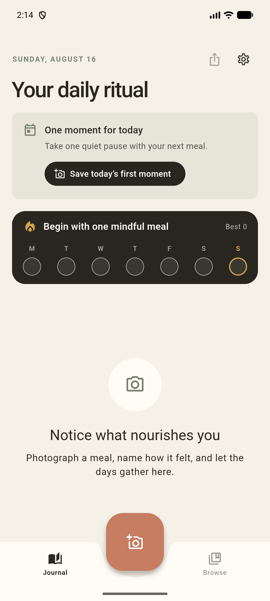
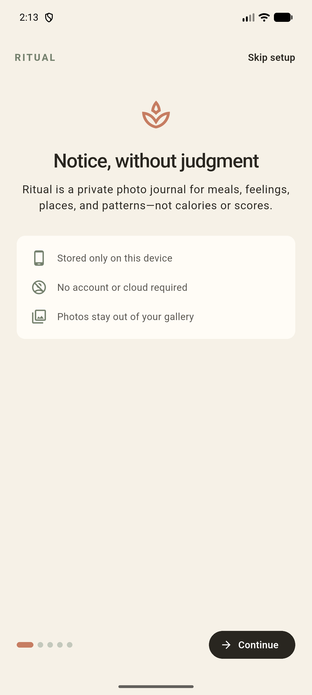
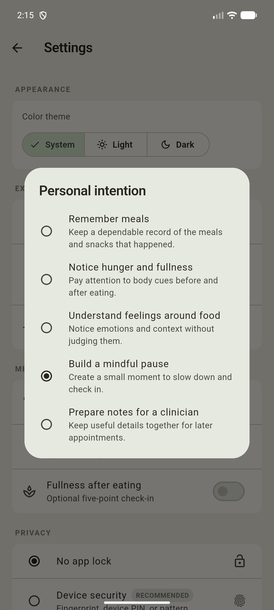
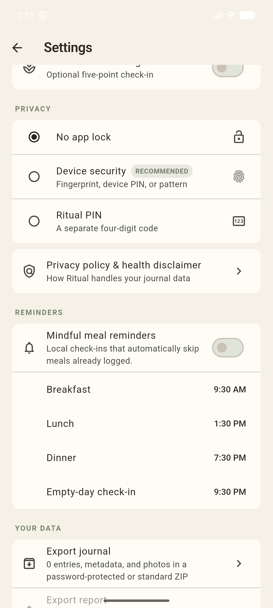

Capture the moment
Photograph a meal and add only the details that feel useful: feelings, a note, a place, or optional reflection scales.
A mindful food photo journal
Ritual helps you reflect on meals, feelings, hunger, cravings, fullness, and everyday patterns—without counting calories or labeling food.
Free forever · Android APK · No account required

Not a diet tracker.
Not a calorie counter.
Just a gentler way to notice.
Inside the app
Calm prompts, personal intentions, and reminders that respect the rhythm you choose. These screens are captured directly from the app.



Why Ritual
A simple photo can hold more than what was on the plate. Ritual gives you room to remember the moment—and notice what changes over time.
Photograph a meal and add only the details that feel useful: feelings, a note, a place, or optional reflection scales.
Revisit days, browse a visual calendar, and see gentle, deterministic insights grounded in your own journal.
No account, cloud journal, ads, analytics, subscription, or paywall. Export a ZIP, PDF, or CSV whenever you choose.
Private by design
Entries and meal photos live inside Ritual’s private storage on your Android device. Ritual has no account system or server receiving your journal.
Read the full privacy policyOn-device storageYour journal isn’t uploaded to a Ritual cloud.
Optional app lockUse device authentication or a separate Ritual PIN.
No trackingNo advertisements, analytics SDK, or activity profile.
Portable by choiceYou decide when to create and share an export.
Good to know
Not yet. Ritual is in active development and currently installs as an Android APK. Your phone may ask you to allow installation from your browser or file manager.
No, as long as the APK is signed with the same Ritual signing key and has a newer build number. Exporting a ZIP before an update is still a sensible backup.
No. Ritual is a personal reflection tool, not a medical device, and its summaries are not medical advice.
Yes. Every feature is available without payment. Optional sponsorship supports continued development but never unlocks features, status, or special access.
Permanent versioned builds are kept on the GitHub releases page. The main download button always points to the newest build.
Start your Ritual
A private place to notice meals, feelings, and patterns—at your own pace.
Download the latest APK